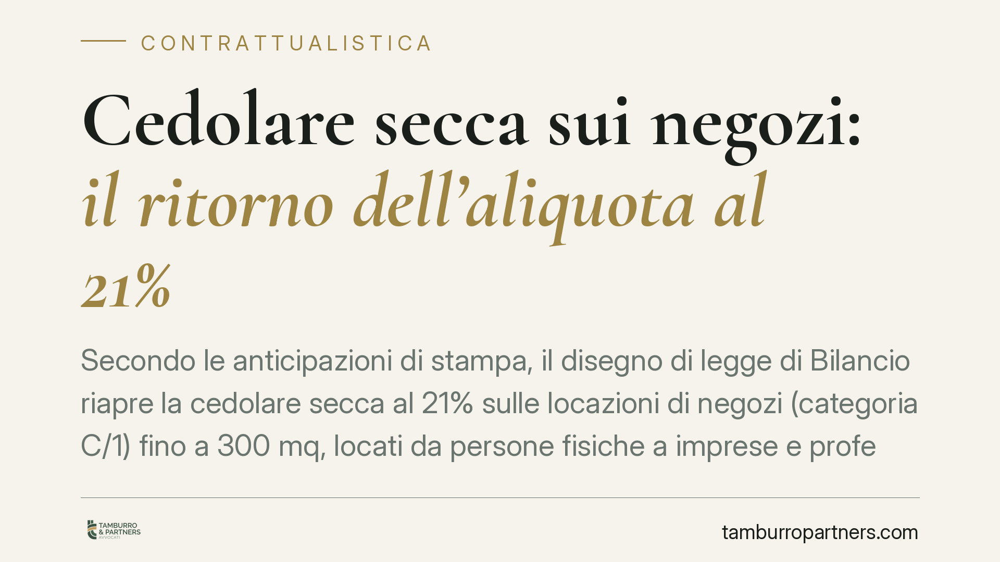

Cedolare secca sui negozi: il ritorno dell'aliquota al 21%
Secondo le anticipazioni di stampa, il disegno di legge di Bilancio riapre la cedolare secca al 21% sulle locazioni di negozi (categoria C/1) fino a 300 mq, locati da persone fisiche a imprese e professionisti. La misura interessa chi possiede immobili commerciali e valuta nuovi contratti. Finché il testo non è approvato e pubblicato, però, restano semplici indicazioni provvisorie.

Di cosa si parla
Un regime opzionale consente al proprietario di tassare il canone di locazione con un'imposta sostitutiva ad aliquota fissa (la cosiddetta cedolare secca), in alternativa alla tassazione ordinaria IRPEF e all'imposta di registro annuale. Fino a oggi questa opzione riguarda, di regola, le sole locazioni abitative.
Le anticipazioni sul disegno di legge di Bilancio prospettano un'estensione: la possibilità di applicare la cedolare al 21% anche ai contratti su negozi classificati nella categoria catastale C/1 (botteghe e negozi) con superficie fino a 300 metri quadrati, locati da persone fisiche a imprese, artigiani e professionisti. L'applicazione dovrebbe limitarsi ai contratti di nuova stipula.
Avvertenza. Le informazioni che seguono derivano da un testo non ancora approvato né pubblicato in Gazzetta Ufficiale. La data del Consiglio dei ministri e la stessa denominazione del provvedimento sono indicazioni di stampa, allo stato non verificabili e suscettibili di modifica.
Inquadramento normativo
Una misura analoga era già stata introdotta dalla legge di Bilancio 2019 (L. 145/2018), che aveva previsto la cedolare secca al 21% per i negozi C/1 fino a 600 mq. Quella disciplina ebbe però portata molto circoscritta: si applicava ai contratti stipulati nel 2019 ed escludeva espressamente i contratti stipulati su immobili per i quali, alla data del 15 ottobre 2018, risultava già in corso un contratto non cessato anticipatamente. La finestra, in sostanza, era pensata per evitare risoluzioni e ristipule meramente fiscali.
Sul piano civilistico, le locazioni commerciali restano governate dalla L. 392/1978, legge sulle locazioni degli immobili urbani. Per gli immobili a uso diverso da quello abitativo (Titolo II) essa disciplina, tra l'altro, la durata minima del contratto, il recesso del conduttore e l'indennità per la perdita dell'avviamento commerciale. È impreciso definirla "legge sull'equo canone": l'equo canone in senso stretto riguardava gli immobili abitativi ed è stato superato. Sulle locazioni commerciali la L. 392/1978 incide invece su durata, recesso e tutele del conduttore, profili che restano fermi a prescindere dal regime fiscale scelto.
Implicazioni pratiche
Per il proprietario persona fisica l'interesse è evidente: un'imposta sostitutiva al 21% può risultare più conveniente rispetto alla tassazione ordinaria del canone, che si cumula agli altri redditi secondo gli scaglioni IRPEF.
Va però considerato il regime del registro. Le aliquote dell'imposta di registro sui contratti di locazione variano in base alla natura dell'immobile e alla posizione del locatore. Per gli immobili strumentali come i C/1, l'aliquota è dell'1% quando il locatore è soggetto IVA; negli altri casi si applica l'aliquota ordinaria del 2%. La cedolare, dove ammessa, assorbe l'imposta di registro annuale: il risparmio reale dipende quindi dal confronto tra i due scenari nel caso concreto. È un calcolo da fare caso per caso, non in astratto.
Un aspetto spesso sottovalutato riguarda l'aggiornamento del canone. L'opzione per la cedolare comporta, per il periodo di durata dell'opzione, la rinuncia alla facoltà di chiedere l'aggiornamento del canone, anche se previsto in contratto, incluso quello legato all'indice ISTAT. In fasi di inflazione elevata questo vincolo può erodere il vantaggio fiscale: va messo a bilancio prima di decidere.
Cosa fare in concreto
- Verificate la categoria catastale dell'immobile: la misura riguarderebbe i soli C/1 entro il limite di superficie indicato.
- Confrontate i due regimi (cedolare al 21% e tassazione ordinaria con registro) sul vostro caso specifico, tenendo conto del reddito complessivo e della posizione IVA.
- Valutate l'impatto della rinuncia all'aggiornamento ISTAT sul canone, soprattutto per contratti di lunga durata.
- Non risolvete né ristipulate contratti in corso sulla base di semplici anticipazioni: eventuali requisiti di decorrenza, come già accaduto nel 2019, possono escludere operazioni affrettate.
- Attendete la pubblicazione in Gazzetta Ufficiale per conoscere perimetro, condizioni e data di efficacia definitivi.
La convenienza di un regime fiscale non si valuta sul titolo di un articolo, ma sui numeri del singolo contratto e sul quadro normativo vigente. Consigliamo di non assumere decisioni prima che il testo sia approvato e pubblicato.
Contributo informativo a cura di Tamburro & Partners - Avv. Giuseppe Tamburro. Non costituisce parere legale.
Ogni contratto ha il suo equilibrio.
Se vuoi una revisione delle clausole o una redazione su misura, scrivi allo studio. Ti rispondiamo entro un giorno lavorativo.